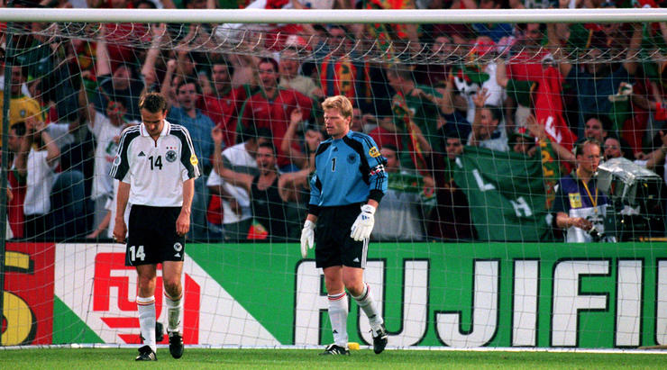

日本青训
中日青训几乎同一时间起步，到如今成果却天差地别。近年来，中国俱乐部、学校青训队大比分输给外国青年队的新闻层出不穷。人们在感叹足球水平的差距时，也在思考：中国青训的问题出在哪里？带着这个问题，河北华夏幸福俱乐部调查了队内青训球员和日本川崎前锋队的青训队员，得到了这样的结果。

当问及“你为什么踢足球”时，中国小球员的回答大多是“喜欢运动，喜欢足球”，而日本小球员的答案是“受父亲、哥哥的影响”。这在一定程度上说明日本的足球氛围更浓，更能激励孩子投身到足球运动中。
而日本足球人口数量的优势，很大程度上要归功于日本高中足球联赛。日本高中足球联赛全称为“日本高等学校足球选手权大会”，在联赛中表现好的高中球员，可以获得职业队的橄榄枝。早年的川口能活、中村俊辅、中田英寿，近年的本田圭佑、浅野拓磨等等，都是从高中联赛走出去的球星。


只不过，这些人并非真的仅依靠天赋就能获得职业俱乐部的垂青，他们往往从小就一边完成学业一边接受专业青训，而从青训队淘汰下来之后，球员一般都会入读高中。
中国也有自己的高中足球联赛。效仿日本从各县挑选出48支球队，中国高中足球联赛将全国分为四个大区，每区16队，共64队。相比之下，日本参赛的48支球队，是在本县内经过淘汰赛重重选拔脱颖而出的，实际参加预选赛的超过2000支球队。而中国高中足球联赛的报名规程写道：“如果参赛队数不足16支，承办赛区单位（或省市）可优先递补一支球队。如还不足，则依据上届联赛分区赛名次靠前球队所在省市依次递补。”然而在2016年，东南区仍只有12只球队参赛，联赛面临着尴尬的境地。“中国高中足球联赛”的官方微博，也仅有453人关注，相比日高联赛动辄四万的上座率，足球人口的差距也由此体现出来。
德国青训
2000年欧洲杯小组赛出局后，德国人意识到了足球人才青黄不接的危机。于是，为了培养接班德国足球的青年人才，德国人对原有的青训系统进行了完善。
德国采用“俱乐部青训+足协青训”的模式，制定了《德国足协青少年发展计划》，并投入1亿欧元在全国设立了366个德国足协精英中心。精英中心的任务就是发现和挖掘当地有潜力的年轻球员，并让他们每周一天进行科学的足球训练。在精英中心接受训练的1.4万名年龄在11岁到14岁之间的小球员之中有天赋的选手，会被精英中心送至国内各职业俱乐部的梯队进行青训。依靠这一系统，根据2017年德国足协最新公布的数字，德国最新的男、女注册球员总数为704.3万人，相当于德国每11个人当中就有一位注册球员，其中青少年球员超过了180万。除了精英中心之外， 46所青少年足球运动中心，29所足球精英学校和108514支青年球队都为热爱足球的德国青少年提供了踢球的场所。

德国的职业俱乐部也各自建立了不同年龄层次的梯队，以2016-2017赛季异军突起的RB莱比锡队为例，队内构建了从U8到U23之间的12支年龄层梯队。梯队的教练通常选择退役不久、希望走上教练道路的老将，他们丰富的经验会帮助球员成长。U23队目前在德甲第四级别联赛，还有诸多梯队分布在德国北部至莱比锡市的各级联赛中。除莱比锡队以外，其他球队的青年梯队也参与到半职业联赛和业余联赛中练级。2017年中国U20队曾希望参加德国第四级别联赛，就是看准了和同一年龄层次球员的竞技机会，只可惜最终未能成行。
如此繁荣的青训体系，让德甲联赛以25.99岁的平均年龄，成为英西法德意五大联赛中平均年龄最小的联赛。